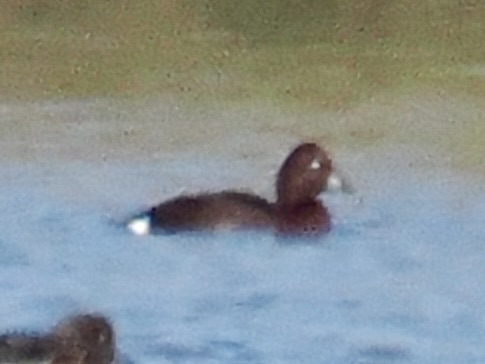

Ferruginous Duck
Aythya nyroca
Order: Anseriformes
Family: Anatidae

A deep rusty red duck with a white rear. Male has white eyes. Frequently associates with Common Pochard. A delight for many UK birders for its relative rarity (not a mega or anything, but enough to warrant a rare bird alert in my area). My fondest memory of this species is when I once asked a birder about it and he returned some comments about a certain "f'ug's duck". Wor'ster, Dur'am, Nor'ich, bo'le o' wa'er, f'ug's duck... Great fun innit?